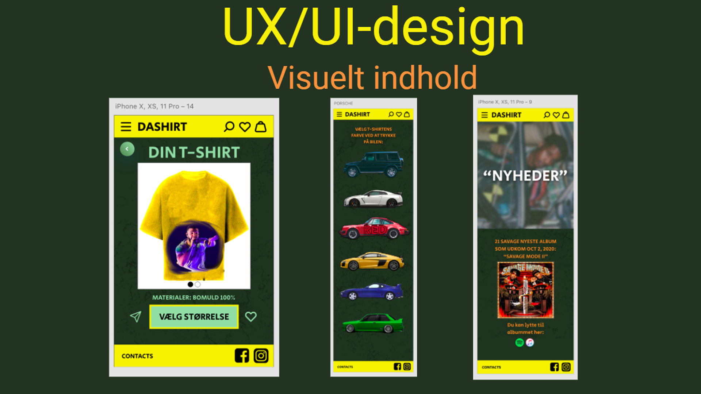

Pitch

(Du kommer ind på opgaven vet at trykke på billedet ovenover)
Opgave: 03.03.03 Pitch
Værktøjer: HTML / CSS / ADOBE PHOTOSHOP
Projekt type: Research / Pitch
I tema 3 blev vi introduceret for Grundlæggende UX og bl.a hvordan man pitcher et produkt. Selve pitchen var delt op i tre kategorier: UX-Research, UX/UI-design og UX-text. I første kategori præsenterede jeg mit produkt og målgruppen, og lagde meget vægt på at t-shirten består af bæredygtige materialer, og at der er 30 dages gratis returret, hvilket gør at man i princippet kan prøve t-shirten på gratis. Det gjorde jeg for at lægge et fundament for pitchen og fange interessen. Da interessen var fanget, i anden del gik jeg i dybde med selve konceptet og hvorfor jeg tildelte produktet navnet “DaShirt”. Jeg forklarede det med at der kun er et unikt slags t-shirt der bliver solgt på siden som kan personliggøres af brugeren. I sidste kategori reflekterede jeg over mit produkt, fremtidsperspektiver og rundede selve pitchen af. En af perspektiverne var at hjemmesiden ville konstant blive opdateret med nyheder og albums fra forskellige rappere i verdenen, og at der muligvis ville komme flere designs af denne t-shirt.